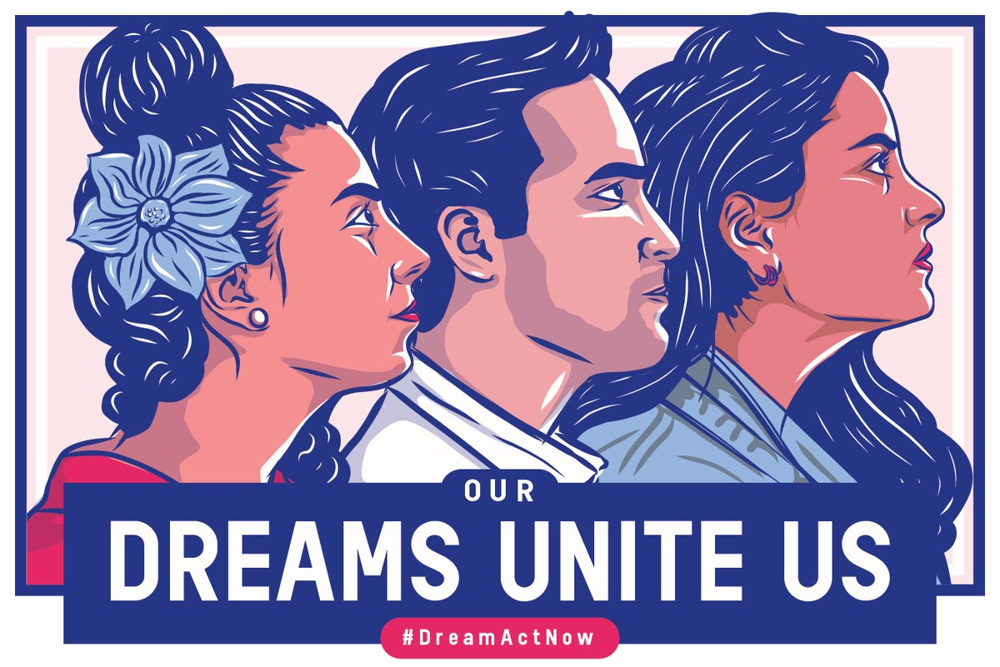

--As of Sept. 4, 2017, there were 689,800 DACA recipients, according to USCIS. The total number of people who have ever been approved for DACA since 2012 is 798,980. Nearly 72,000 initial applications were denieds
--About 70,000 of the cumulative approvals either didn’t renew or were rejected when trying to renew. About 40,000 became lawful permanent residents
